АПК Синапс v1.0. ПО. Спецификации на разработку
Последнее изменение: 24.11.2025
1. Общие положения
1.1. Названия файлов с иконками имеют следующий формат: XXX_Nazvanie_ikonki.svg, где:
- XXX — уникальный числовой идентификатор.
- Nazvanie_ikonki — название иконки транслитерацией без пробелов.
1.2. У иконок светильников идентификатор начинается с 300 и заканчивается 399.
1.3. Идентификатор 300 — дефолтная иконка.
1.4. По идентификатору иконка привязывается к светильнику, поэтому на иконке с использовавшимся идентификатором содержимое должно сохраняться при обновлении версии приложения. Если на иконке 305 был круглый светильник, то менять его можно только стилистически.
1.5. В новых версиях можно добавлять новые иконки, но только с новыми идентификаторами.
2. Текущий набор
Папка с иконками на GitHub: https://github. ... s/Ico/Luminaire
Если ниже у иконки нет самого изображения, то либо она еще не нарисована, либо где-то накосячили с названием файла.
300_default.svg - Иконка по умолчанию.
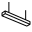301_pot_podv_lin.svg - Потолочный подвесной линейный.
302_pot_podv_krugl.svg - Потолочный подвесной круглый.
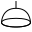303_pot_podv_abazh.svg - Потолочный подвесной абажур.
304_pot_podv_lustra.svg - Потолочный подвесной люстра.
305_pot_podv_kvadr.svg - Потолочный подвесной квадратный.
306_pot_podv_toch.svg - Потолочный подвесной точечный.
307_pot_vstr_lin.svg - Потолочный встроенный линейный.
308_pot_vstr_krugl.svg - Потолочный встроенный круглый.
309_pot_vstr_kvadr.svg - Потолочный встроенный квадратный.
310_pot_vstr_toch.svg - Потолочный встроенный точечный.
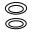311_pot_vstr_toch_dvoynoy.svg - Потолочный встроенный точечный двойной.
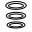312_pot_vstr_toch_troynoy.svg - Потолочный встроенный точечный тройной.
313_pot_vstr_toch_pov.svg - Потолочный встроенный точечный поворотный.
314_pot_vstr_toch_pov_dvoynoy.svg - Потолочный встроенный точечный поворотный двойной.
315_pot_vstr_toch_pov_troynoy.svg - Потолочный встроенный точечный поворотный тройной.
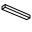316_pot_nakl_lin.svg - Потолочный накладной линейный.
317_pot_nakl_krugl.svg - Потолочный накладной круглый.
318_pot_nakl_kvadr.svg - Потолочный накладной квадратный.
319_pot_nakl_toch.svg - Потолочный накладной точечный.
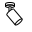320_pot_nakl_toch_pov.svg - Потолочный накладной точечный поворотный.
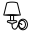321_nas_bra.svg - Настенный бра.
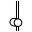322_nas_nakl_lin.svg - Настенный накладной линейный.
323_nas_nakl_kvadr.svg - Настенный накладной квадратный.
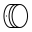324_nas_nakl_krugl.svg - Настенный накладной круглый.
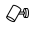325_nas_nakl_toch_pov.svg - Настенный накладной точечный поворотный.
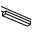326_trek_lin.svg - Трековый линейный.
327_trek_toch_pov.svg - Трековый точечный поворотный.
 328_podsv.svg - Подсветка картины, зеркала.
328_podsv.svg - Подсветка картины, зеркала.
329_lenta.svg - Лента узкая (LED, RGB).
330_torsher.svg - Торшер.
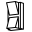331_fasad.svg - Фасадный светильник.
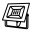332_prozh.svg - Уличный прожектор.
333_stolb_fonar.svg - Уличный фонарь на столбе.
334_grunt_vstr.svg - Грунтовый встроенный.
335_grunt_stolb.svg - Грунтовый столбик.